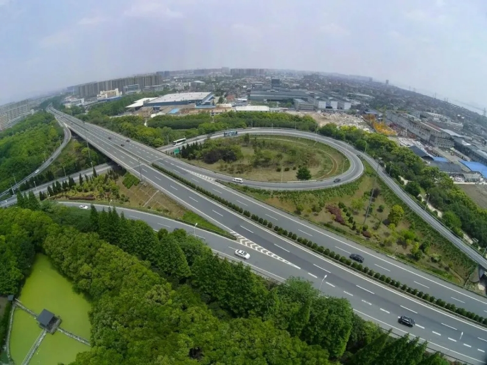

沪杭甬高速公路
浙江第一条高速公路——沪杭甬高速公路。1996年12月6日，从杭州东郊彭埠为起点，往南经过钱江二桥，折向东经过萧山钱江农场、绍兴三江、上虞边墩、余姚梁辉、宁波段塘，终于大朱家，全长145公里的杭甬高速公路全线通车。1998年12月29日，沪杭高速公路建成通车。至此，全长248公里的沪杭甬高速公路全线贯通。运行20多年来，沪杭甬高速公路平整、整洁的路面提高了通行效率，让人们的出行变得更加舒适、快捷，加速了物流循环，成为沿线经济发展的起飞跑道。近年来，随着城市的迅速扩张，沪杭甬高速（杭州市区段）渐渐成为发展的瓶颈。2019年5月，沪杭甬高速公路杭州市区段改建工程开工。作为杭州亚运会交通重点保障项目，该工程北起沪杭甬高速公路乔司枢纽，南至红垦枢纽，通过将原有高速公路路段进行抬升改建，建成“国内领先，省内第一”的集高架快速路、轨道交通、非机动车道慢行系统、地面道路于一体的综合立体交通走廊，预计在2022年亚运会前完工。

沪杭甬高速公路